A pop-up experience that turns Severance fans into Lumon employees, built to keep the show alive in the long stretch between seasons.
Brief
Why care? Popularity in the moment does not guarantee a lasting fanbase. Severance goes years between seasons, and the audience it gathers on air drifts while it’s off air. I broke the problem down into three needs.
Attention. How much people engage with the show outside the episodes themselves, through conversation, theories, and shared moments.
Expectation. What fans believe they’ll receive for staying invested between seasons. Without a reason to keep following, interest fades.
Momentum. Turning that renewed interest into hype that carries all the way to the next premiere, instead of peaking and falling off.
Every piece of this project answers at least one of the three.
The Outcome. The project became three connected pieces, each one feeding the next. Advertising creates the curiosity. The pop-up turns visitors into Lumon employees. A digital browser carries the experience onto their phones, from booking a ticket to sharing their photos afterward.
The audience is threefold. Fans of the show, people who have Apple TV+ but have never watched it, and people who have neither. Fans come first, because the whole idea runs on the feeling of missing out. When fans share what they experienced, everyone else starts to feel left outside the glass.
Design
The room visualizations below were generated with AI for concept purposes.
Advertising. The advertising is a puzzle in its own right. A word search billboard hides messages in a grid of letters, and a QR code leads to the experience.
The billboard also changes over time. Weeks before the event it reads “Find us.” Then “We need you.” Then “Something’s wrong.” In the final week, “Help us” glitches through in red. Each stage is more desperate than the last, so people who pass it every day watch the tension build.
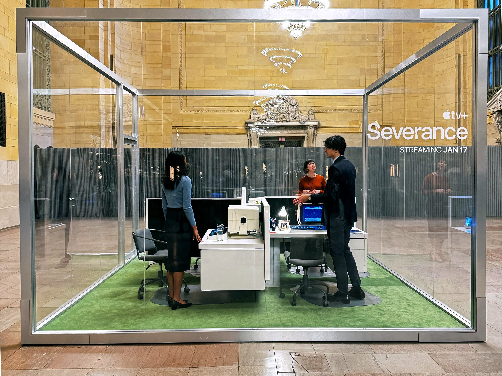
The same takeover runs on the Apple TV home screen, where the people most likely to watch are already looking.
Getting Hired. Scanning the code leads to a mobile browser that frames booking a ticket as being hired by Lumon. Choosing a date and time reads like an onboarding process, set in Input Sans with green-tinted type on black. The visitor’s journey as an employee begins before they ever reach the building.
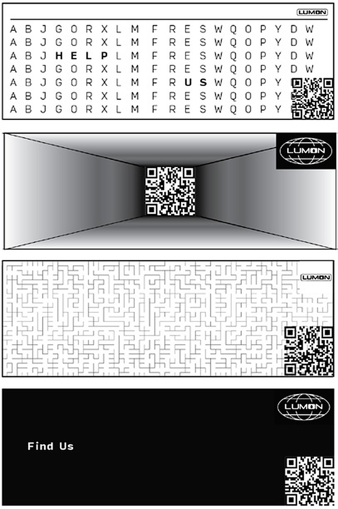
Arrival. On the day of the event, the Lumon logo on the building confirms visitors are in the right place, and the “Become an Employee” banner points the way. A line forms outside, and strangers start comparing theories about what waits inside.
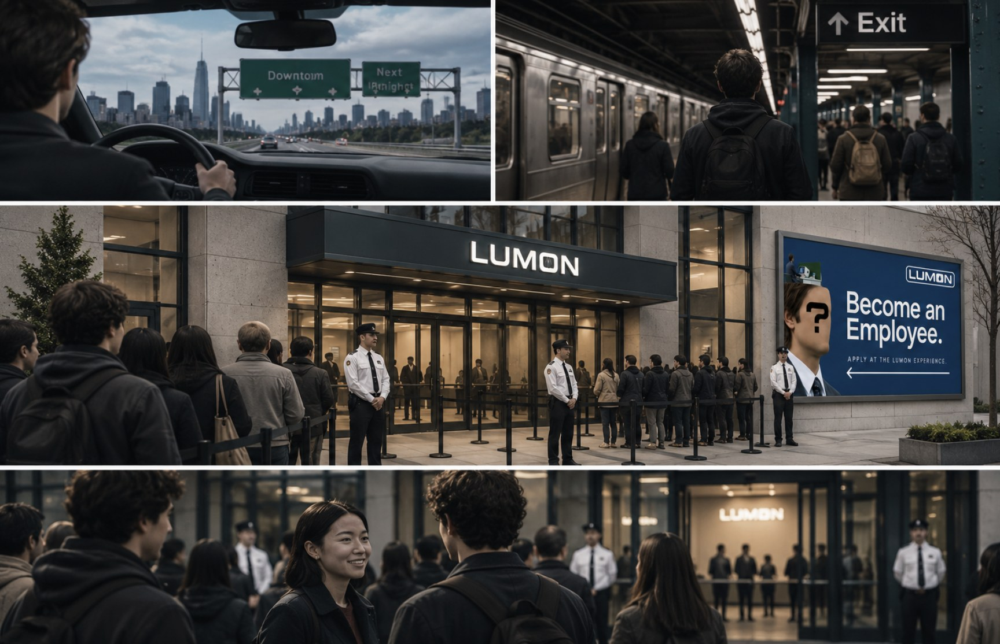
Main Entrance. Check-in is where visitors become employees. Each person receives an ID badge with their name, photo, employee code, and entry time, set in Forma so it reads clearly at a small scale. Groups of 30 enter every 30 minutes, and everyone surrenders their phone before going in.
The badge works throughout the exhibit. Scanning it at readers hidden around the space triggers cameras that take photos, which turns the visit into a scavenger hunt for photo spots.
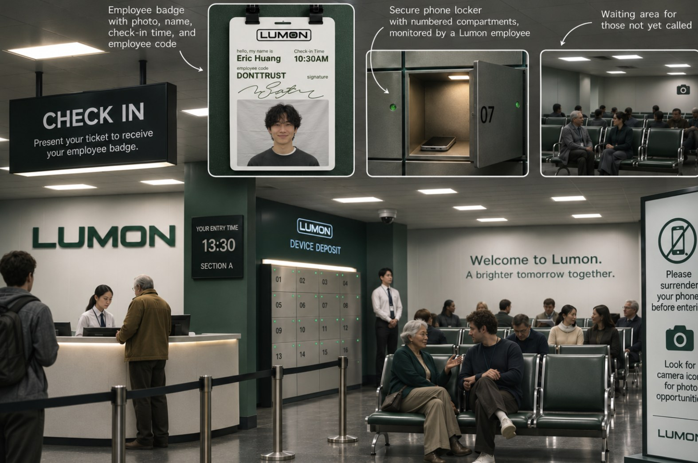
Transition Room. This room recreates the opening of the show, where a new employee wakes up on a table after the procedure. Visitors can lie on the table and scan their badge to take that photo. A Lumon welcome presentation in blue and white walks them through the rules. When it ends, the lights flicker and an elevator dings, and the visitors have been severed.
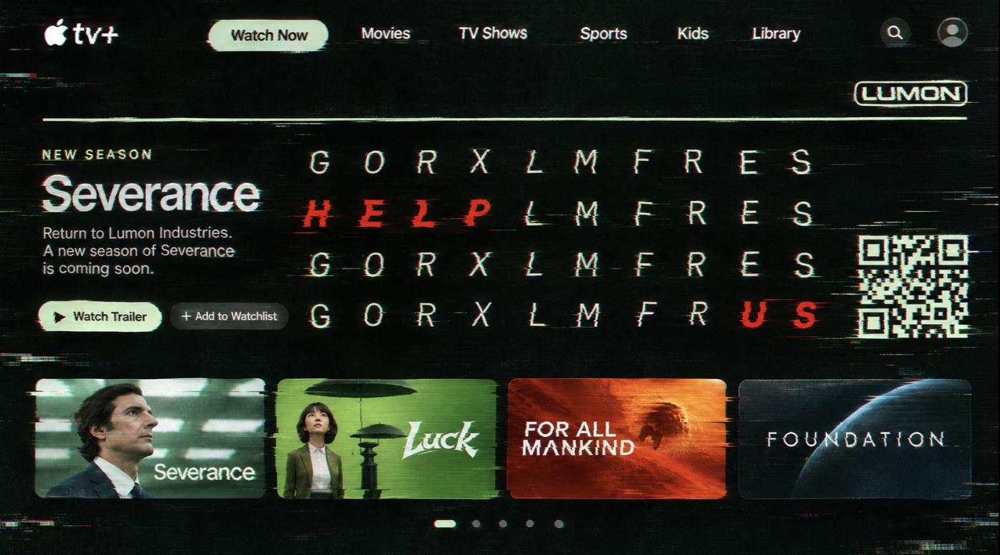
Main Office. The main office is the space fans have only seen on screen. Near the entrance, a screen asks, “Someone is staring at you through the window. Who is it?” After answering, visitors see how everyone before them answered. Red contraband, a book and a picture frame, sits half hidden among the desks, and some monitors show ordinary instructions like refilling the break room, so the office feels like a place that really runs.
Hallways and Random Rooms. Off a long, sterile hallway are rooms that make no sense inside an office, each with its own small task. The signage stays clean and controlled in Manifold Extended, which makes the rooms behind it feel even stranger.
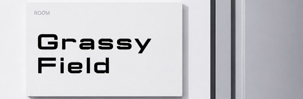
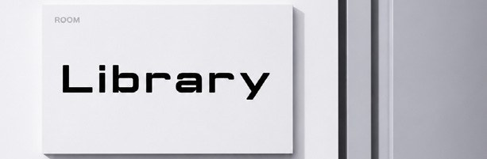
Child’s Playroom. Visitors are told to “Build a house that is not a house.” They photograph what they build, and a screen shows every interpretation that came before theirs.
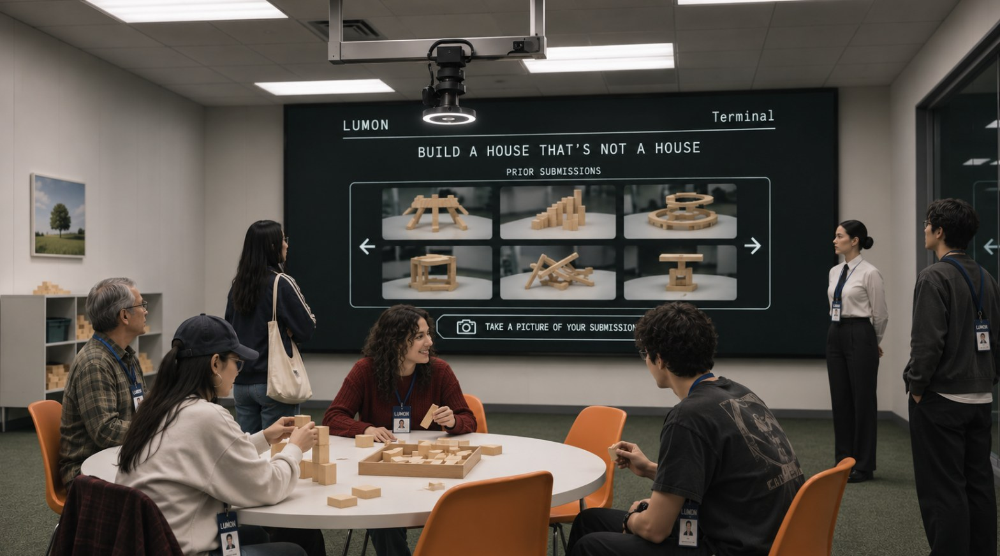
Grassy Field. Rolling hills of grass sit under fluorescent office lights. A terminal in the field asks visitors to name one piece of contraband they found in the main office, rewarding those who were paying attention.
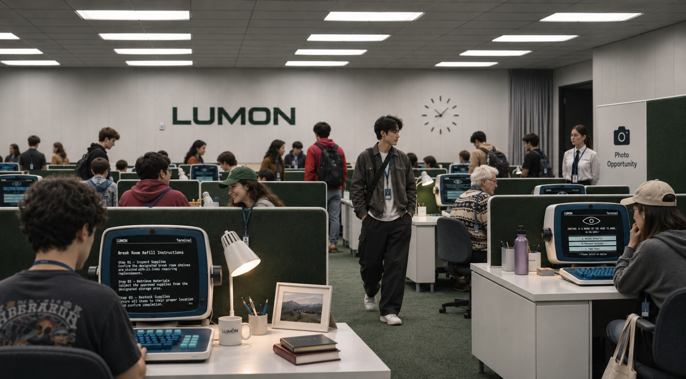
Library. Books with nonsense titles cover the floor, and visitors are asked to shelve as many as they can in the right places. It is a mundane, pointless task, which is exactly the work Lumon gives its employees.
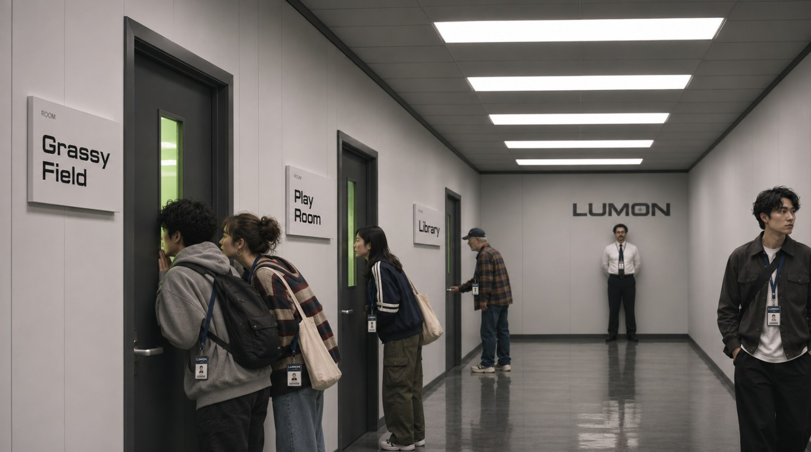
Wellness Room. Dark wood, green chairs, and warmer light make this room feel intimate after the sterile office, and a soothing voice plays reassuring statements on a loop. It feels calm in a way that should be unsettling. One of the red objects in this room hides a clue to season three.
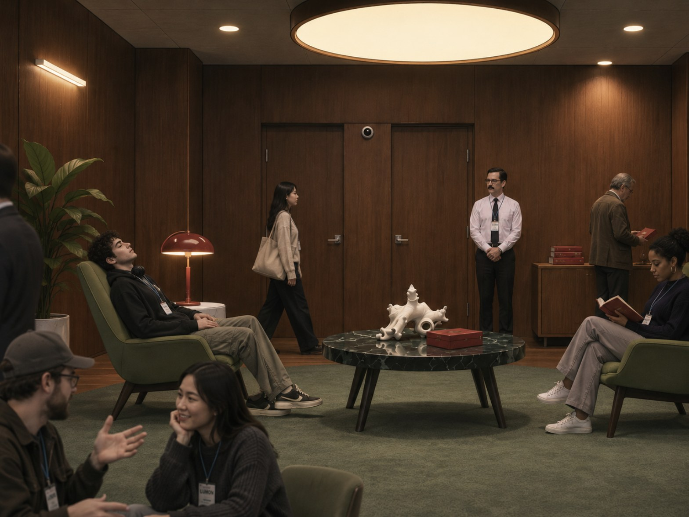
Punishment Room. The last room is small and dark, with a single chair facing a projection that repeats “Forgive me for the harm I’ve caused the world” in green-tinted Input Sans. The words are the only light. After a few seconds the projection glitches and reveals season three of Severance, the moment everything before it was building toward.
Spread the Word. On the way out, visitors get their phones back and use the employee code on their badge to unlock every photo taken of them. The site welcomes them, then glitches with a plea to find someone, before switching to admin access and opening their photos. Even the goodbye feels like someone inside is reaching out for help.
Visitors share their photos, their friends feel like they missed something, and that feeling is the Momentum the project set out to create.
Process
Advertising directions. I explored four directions for the advertising, a word search, a forced-perspective hallway, a maze, and a simple “Find Us.” The word search won because it rewards people who stop and look. I then mapped how its message would escalate in the weeks before the event.
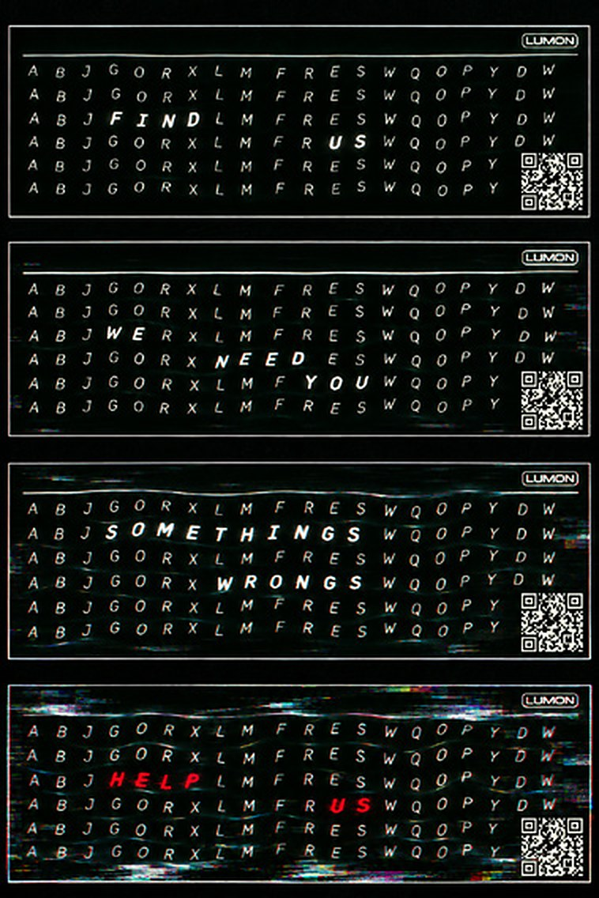
Floor plan. The layout started as sketches and became a 3D model of six spaces. A main entrance, a transition room, the main office, a set of random rooms off a hallway, the Wellness Room, and the Punishment Room. Visitors discover each space one at a time rather than understanding the layout at once, the same unfamiliar feeling the corridors create on the show.
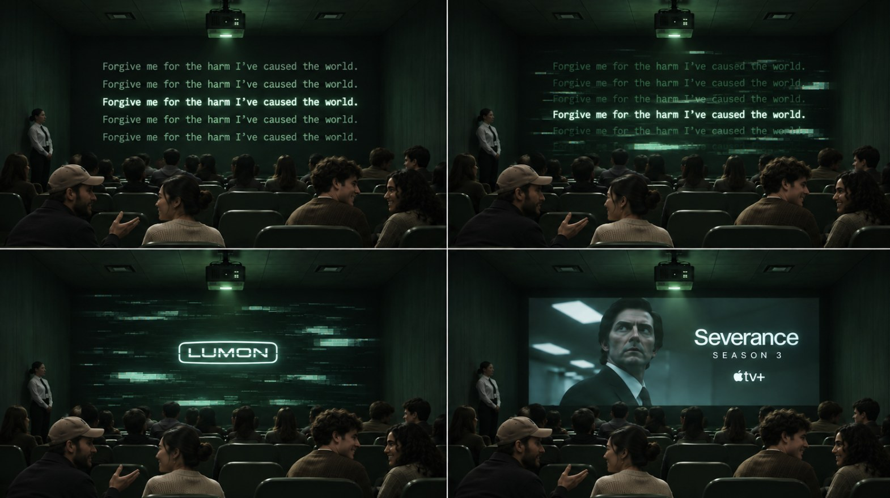
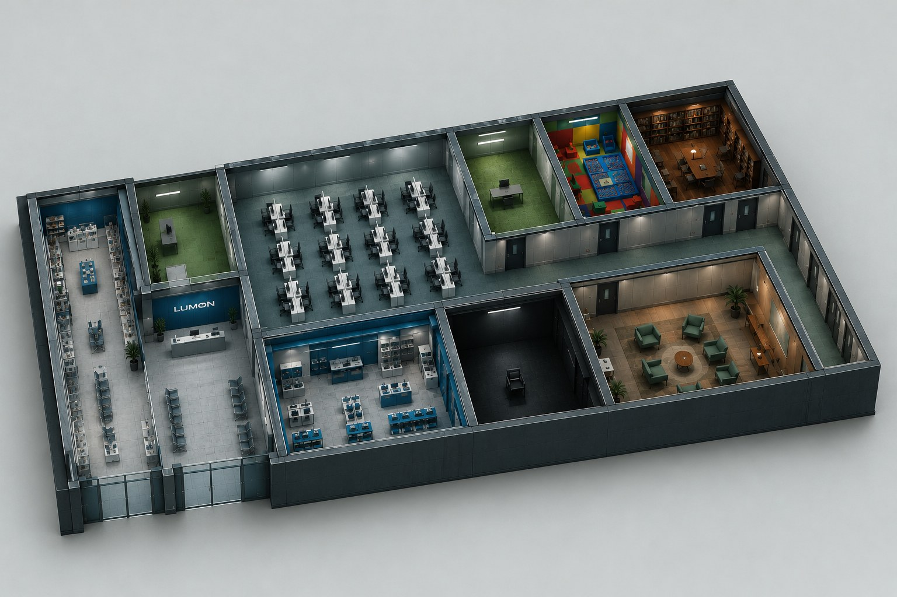
Research
Previous Pop-ups. Apple has brought Lumon into the real world before. Days before season two premiered, a glass box in Grand Central Terminal held a working Macrodata Refinement office, with the cast at their desks ignoring the crowd outside. At Bell Works in New Jersey, fans toured recreated sets, joined a cast Q&A, and sat down for a themed dinner.
Both brought the world of Severance to life, but both asked visitors to watch rather than take part. The glass box also leaned on the cast to draw a crowd. That was the gap I designed for. Instead of another museum-style exhibit, I wanted something closer to an escape room, where visitors don’t observe Lumon, they work there.
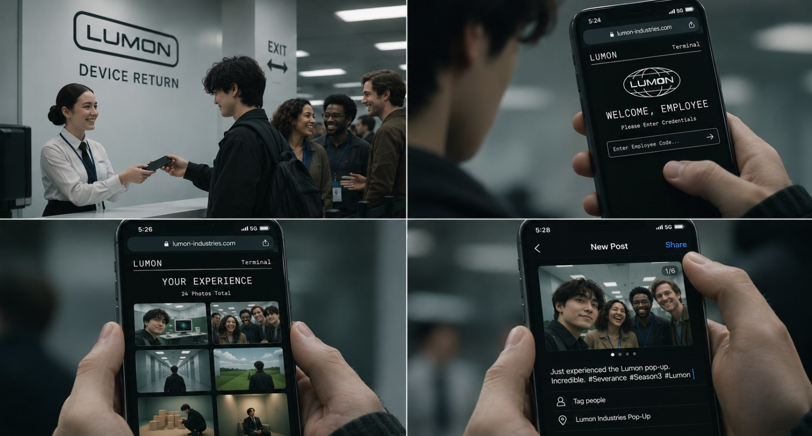
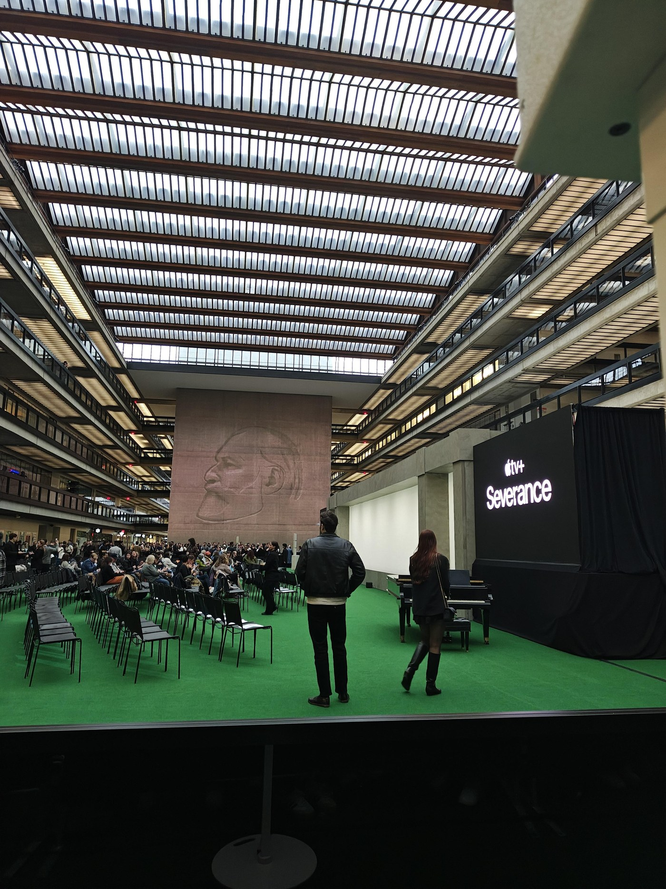
Reference photos of the two earlier Apple activations.
Lumon’s Visual Language. Before designing anything new, I broke down the language Lumon already speaks so every piece would feel like it came from inside the building.
Color. Blue is the work side of Lumon, sterile and controlled, so it leads in the office spaces. Green stays in the background, on floors and dividers. Red belongs to the outside world and to contraband, so red objects are hidden throughout the pop-up for visitors to find. Black and white are reserved for administration and security, which is why every staff member wears only black and white.
Type. Manifold Extended carries the logo and large signage. Forma, a neo-grotesque, covers anything printed, from badges to book covers. Input Sans is used for every screen, giving the technology its cold, technical voice.
Space. Lumon’s architecture is mid-century modern corporate, with clean lines, uniform furniture, and fluorescent light. Long corridors with no landmarks make the building feel larger and more confusing than it is, and I wanted the pop-up to do the same.
Takeaway
The two earlier pop-ups let people look at Lumon. This one lets them work there, and it gives them something to talk about long after they leave. Attention comes from the billboard, Expectation from the clues and the reveal, and Momentum from every photo shared on the way out.